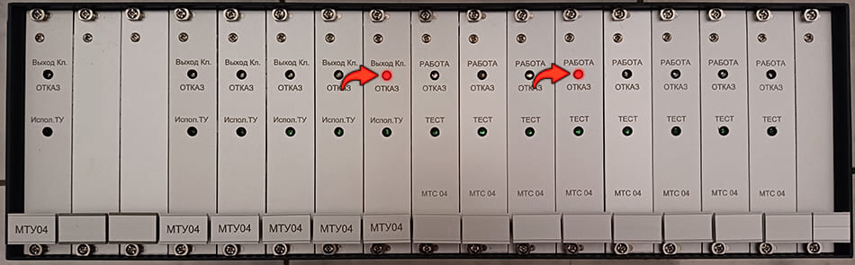

5. Загорается красный светодиод «Отказ» на МТУ или МТС
5.1. Возможно неисправен МТУ
Заменить МТУ
5.2. Возможно неисправен МТС
Заменить МТС
5.3. Возможно неисправен МВВ
Заменить МВВ
5.4. Возможно неисправен МИ-04
Заменить МИ-04
5.5. Возможно пострадал шлейф от МВВ
Заменить шлейф
Светодиодная индикация панели БТ
